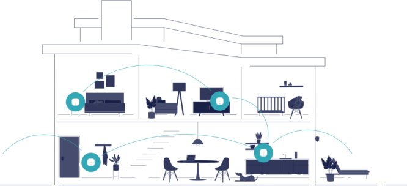

<section class="true-mesh ">
    <div class="container">
        <h1>TrueMesh covers your whole home.</h1>
        <p>TrueMesh learns the layout of your home to intelligently route traffic and optimize your wifi. eero 6 and eero Pro 6 are the first Wi-Fi 6 routers with eero’s TrueMesh technology.</p>
        <button type="button" class="button">See how it works</button>
        
    
    </div>
</section>